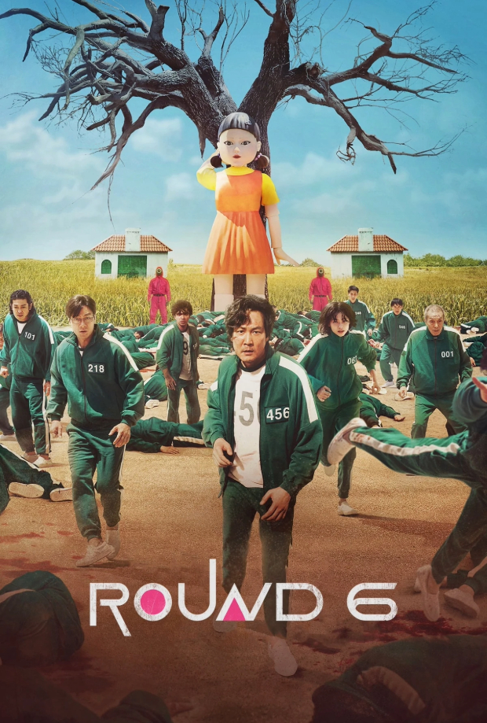
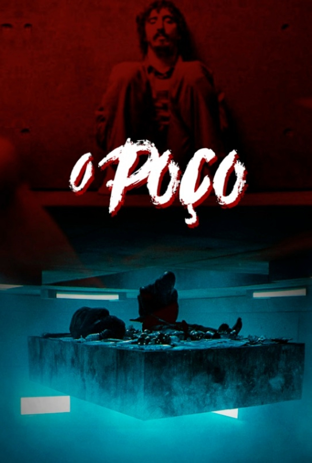
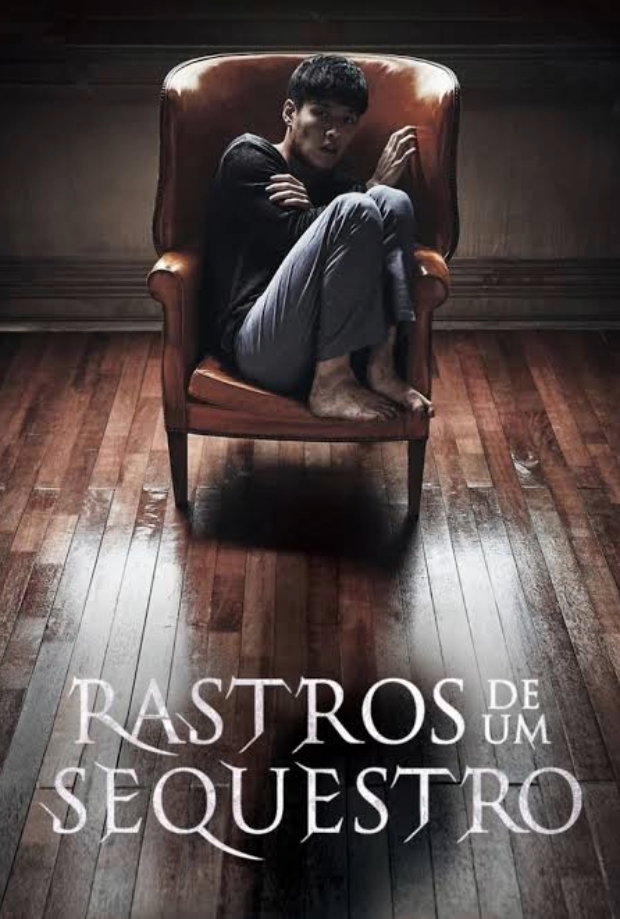

Filmes Populares

Round6 (2021-2025)
 9.2
9.2
 Favoritar
Favoritar
Série sobre um grupo de pessoas passando por dificuldades financeiras aceita um estranho convite para um jogo de sobrevivência. Um prêmio bilionário os aguarda, mas as apostas são altas e mortais.

Caixa de pássaros (2018)
9.2
Favoritar
Em um mundo pós-apocalíptico, uma força misteriosa leva as pessoas ao suicídio se elas olharem para ela. Para sobreviver, os personagens precisam evitar ver essa força e, para isso, precisam viajar de olhos vendados.

O poço (2019)
9.2
Favoritar
"O Poço" é sobre uma prisão onde os detentos são alimentados por uma plataforma descendente, os que estão nos níveis mais altos comem mais do que precisam enquanto os dos andares mais baixos ficam com as migalhas. Até que um homem decide mudar o sistema.

Rastros de um sequestro 2017
9.2
Favoritar
Um homem é raptado e retorna depois de 19 dias sem nenhuma memória do que aconteceu. Então seu irmão, Jin-seok, tenta descobrir a verdade sobre seu desaparecimento.